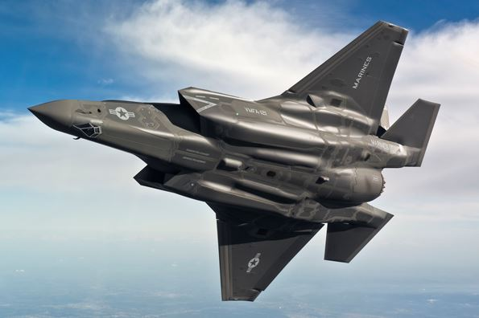

【空军】未来十年的中美武器对比（二）
2015-08-08 22:25:00
原文网址：https://blog.udn.com/MengyuanWang/108908760
航空与半导体并列为21世纪美国制造业的两颗闪亮明珠，所以美国空军近年的武器採购史没有陆军那么悲催，尤其是Boeing一直到最近十几年才开始严重腐化（最知名的案子是2003年的加油机案，Boeing买通了国防部的一个文职官僚，叫Darleen Druyun，得以用高价赢得好几个合约），777以及更早的各式大飞机都已成熟，改装的工作量很小，所以毛病还不显着；但是其他的公司就不一定有同样的技术水准，其中最大的问题企业首推Lockheed。
我们从F-22谈起吧。它的最早起源点是1981年的Advanced Tactical Fighter（先进战术战机）竞赛，其目标是在冷战背景下设计一架能在中欧上空轻易猎杀大量Mig-29的隐身战机。Lockheed玩弄了很多把戏（主要是把YF-22画得很传统很漂亮，却没有做真正的工程验证工作，然后凭空编出在性能和风险上的优势；换句话说，就是公关主导工程）打败了竞争对手（主要是YF-23），成为主承包商，随后其他三家公司受命协力合作，必须反过来倒帮Lockheed完成YF-22的工程化工作，其结果就是F-22。80和90年代是美国国力的巅峰，我有一个美国朋友当时在F-22计划里做电磁工程师，他回忆说他们“在钱里面游泳”（“Swimming in Money”），所以什么技术问题都解决了。完成后的F-22毛病不在技术，而在于原定的任务使命上：既然是要在中欧作战，航程就不重要。更糟糕的是80年代的美国空军主管没有认识到下一代战机的费用将会大半来自电子系统，仍然根据以往的经验法则而限制了飞机的尺寸，这对必须内藏武器的隐身飞机来说是雪上加霜，虽然工程师们硬是满足了大部分的性能指标，内载燃油还是不得不被牺牲掉了，使得航程进一步下降。另一个一般人不会注意到的问题是F-22的内部空间空前紧张，不但增加维修的困难，也使日后的一些简单升级都成为巨大的工程。
共军的J-20在开始设计时，F-22早已定型，因此得以吸收后者的开发经验，针对西太平洋的特殊地理环境，强调了航程的重要性。2017年将开始批量部署的J-20第一批次，如果要和F-22单打独斗，可能还稍逊半筹，这主要是引擎上的些许劣势使然（隐身能力上的一点差距可以由光电系统结合较大型的长射程全向红外线导弹来弥补，共军的PL-10正是为此而量身设计的）。但是F-22的航程缺陷在西太平洋会有毁灭性的后果：共军只要先行打击琉球和关岛的机场，即使还有F-22能进入战区，也必然得依赖大批的加油机。J-20不须要和F-22狗斗，只要打下加油机，F-22自然就不战而败。我在前文《2020年前的台海战役》中提到的Rand Corporation的论文正是根据这个逻辑所做的论述。到了2025年，WS-15引擎的改进型应该也已经成熟，那么J-20在和F-22单挑时也不会落于下风。
其实我在前一篇文章提到的超支、超重和落后进度的军工问题在F-22上也都发生了，只是空优隐身战机是空地一体战和空海一体战的绝对支柱，所以美国没有“放弃”的选项，最终还是靠砸钱解决，也就是把其他问题集中到“超支”上。结果195架F-22一共花了667亿美元，平均3.4亿一架。金融危机后的美国承受不起这样的价码，所以在2009年终止了订购，最后一架F-22在2012年服役。此后美国空军、海军和陆战队的隐身战机梦就只能投注在同样由Lockheed研制的F-35上。F-35源自1996年开始的JSF（Joint Strike Fighter，联合攻击战机）计划。这时Lockheed已经比15年前更加肥大，结果JSF只有Boeing做了象徵性的竞争就由Lockheed得标。F-35虽然是冷战结束后才开始的设计，它的先天不足反而比F-22还严重，这是因为政治影响力强大的陆战队要求垂直起降能力（严格来说是STOVL，Short Take-Off Vertical Landing，短场起飞垂直降落），为了一机三军通用，有STOVL能力的F-35B成了制约设计优化的紧束衣。明明隐身机的内置弹舱适合双引擎设计，却因为STOVL而採用单引擎方案，结果对推力的要求高到连Pratt & Whitney都觉得有很大困难的地步。其他各种大大小小的妥协（包括因为STOVL而对尺寸，尤其是机身长度，有更严苛的限制）和Lockheed买通军方后的脑残管理（例如军方居然同意未定型就先批量生產，那个将军后来被撤换退役，提早成为Lockheed的高薪顾问）总加起来使得超支、超重和落后进度的问题比F-22还严重得多，很多美国军官私底下拿Comanche来和F-35相比（其中有些已经退役的就公开地说）。
F-35B的内部剖视图，请注意短短的机身中线被推进系统完全占据，以致空间安排比F-22还要紧凑困难。这是F-35B的肚皮照片，可以看出为了弥补两侧弹舱深度不够而做的四个弧形突起，也因此使F-35赢得了“怀孕鲸鱼”的外号。 这是四种隐身战机的尺寸对比，由左至右分别是共军的J-20，俄国的T-50，美军的F-22和F-35C（海军版，是F-35最大的一型），可以清楚看出F-35短小紧凑的程度。J-20极为修长，弹舱、燃油和引擎可以自前而后布置，鸭翼式布局也使主翼在重心之后，所以横截面可以控制得很小很均匀；乍看之下是庞然大物，实际上反而是四型战机中超音速阻力最低的。F-35则刚好相反，机翼、引擎、弹舱和燃油都必须放在通过重心的同一个横截面上，所以穿音速和超音速阻力极大，既不能狗斗也不能超巡。
这是四种隐身战机的尺寸对比，由左至右分别是共军的J-20，俄国的T-50，美军的F-22和F-35C（海军版，是F-35最大的一型），可以清楚看出F-35短小紧凑的程度。J-20极为修长，弹舱、燃油和引擎可以自前而后布置，鸭翼式布局也使主翼在重心之后，所以横截面可以控制得很小很均匀；乍看之下是庞然大物，实际上反而是四型战机中超音速阻力最低的。F-35则刚好相反，机翼、引擎、弹舱和燃油都必须放在通过重心的同一个横截面上，所以穿音速和超音速阻力极大，既不能狗斗也不能超巡。
在F-35计划刚开始的时候，其价钱目标订在等同最新型的F-16，大约6000万美元左右；到了2014年，Lockheed的公关报告已经给出从8500万到1.5亿间的好几个不同数目，《时代周刊》（《Time》）于是做了深入的会计分析，发现实际上美军的花费在跳动之后应该会稳定在2.2亿美元一架，而且这是排除研发费用、实现量產效率之后的数字；Lockheed的数字游戏基本上靠沿用多年前的老估计值并且排除了引擎、头盔、涂料、软体等附件而制造出来的（美国的制造业以制造谎言为核心竞争力，至少对Lockheed是切实的描述）。但是Lockheed的政治游说力量已经大到不可能让F-35被取消的地步，而且空军和陆战队的几千架旧飞机寿命即将届满，F-35是替换它们的唯一选项（海军的F/A-18E/F还半新不旧，对F-35就完全没有热情），所以在延误超过十年、性能因超重而大幅缩水（最近在不用新式传感器的传统狗斗试验中被F-16打得落花流水）、价钱已超过目标值三倍半的情形下，美国只能硬着头皮继续Throw Good Money After Bad。
其实F-35的性能缺失并不完全是意外，Lockheed和美国军政菁英在计划一开始就知道一机三军通用会使得F-35的性能平庸。他们的如意算盘是冷战后盟友们都在削减军事预算，刚好可以用大家合作建F-35的藉口来消灭西欧的战机研发和制造能力，并且为Lockheed开拓更大的外销市场。为此国会还通过特别法案，禁止F-22的外销，让F-35成为唯一的选项。既然F-35主要是外销机，那么个别子系统的技术可以是极度先进的，但是整体性能却不能接近F-22。反正技术分享只是骗顾客签约的假话，事后可以赖账；而且用外国顾客的钱发展出来的新锐子系统，可以用来升级F-22。没想到Lockheed的超支、超重和落后进度等等问题会如此严重，更没想到F-22的短航程会使它在西太平洋无用武之地，以致害人却先害了自己。目前F-35还没有定型，却已生產了100多架；美国最新的计划是还要买2400架左右，盟友们（包括日韩）的订单则超过800架。依2.2亿美元一架来估算，美国自己在F-35上的财务支出还有5300亿的购买费，现代战机的使用费是购买价的250%左右，所以全寿命费用是1.9万亿美元，这是美国每年国防总预算的三倍。从共军的观点来看，F-35的隐身和格斗性能都与J-20有代差，在西太平洋战场完全没有意义；看着美军浪费三年的总军费在这个项目上，实在是梦寐以求的好事。
在大型飞机方面，美国有民航工业的先天优势，到2025年为止，共军以C919为载机的预警机、加油机和反潜机可以大致追到没有代差的地步，在预警机的雷达和电子系统上应该还有很大的领先（NATO计划到2035年才替换E3，即使没有延迟，E3现在已经落后一代，未来20年只会越加落伍；参见http://www.reuters.com/article/2015/02/01/us-nato-arms-idUSKBN0L51SE20150201）。不过共军在现代轰炸机上是一片空白，未来十年只怕还无法完成与B-2同级的產品，最有可能的是开发出类似B-1B的超音速轰炸机，但是去掉可变翼，加入局部的隐身处理，也就是B-1的现代化升级版。这会留给美军突击共军纵深的单向透明能力，是在推倒美军支配西太平洋战场能力的过程中的最大阻碍之一。美军也认识到这一点，所以未来十年固然会浪费很多资源在没有实际军事意义的F-35上，但是还是会维持甚至扩张三个主要生產项目和两个研发计划以因应未来西太平洋战场的需要；那三个生產项目是Virginia Class核子攻击潜艇、Arleigh Burke Class Block III防空驱逐舰和Ford Class航空母舰，两个研发计划是替代Ohio Class的新型战略导弹核潜艇和B-3隐身轰炸机。除了B-3之外，都是海军的计划，我们在下一篇文章再继续探讨。
关于B-3，基本上是缩小廉价版的B-2。原本计划叫做Next Generation Bomber（NGB，下一代轰炸机），2004年开始，预计2018年服役，2009年被砍，改名为Long Range Strike Bomber（LRS-B，长程攻击轰炸机），新预计在2025年左右服役，空军希望以5.5亿美元的单价购买80-100架。目前有两个团队在竞争，今年年底前应该会决定由谁得标。依美国军工近年的表现来做乐观的推测，这个计划会延迟五年，单价会倍增到11亿美元左右（因为已经有B-2做范本，超支、超重和落后进度可能不会太离谱；不过F-35也有F-22做范本，结果还是一场大灾难）。如果能达到这样的指标，美军的採购数量应该不会被大幅削减；但是等到它批量服役，已经是2030年代，届时VHF雷达的演进有可能已经能抵消这类飞机的隐身能力（目前只有庞大而且固定的HF阵列雷达才能对抗B-2和B-3；参见前文《雷达与隐身技术之间的矛盾关系》）；共军自己的版本在15-20年后也极可能已经实用化，所以即使美国的军工业没有把LRS-B计划搞砸，它仍然可能是Too Little Too Late，而没有决定性的战略意义。
30 条留言
此外美国社会在过去40多年腐化堕落，制造业的竞争力流失，军工业当然也不能幸免。
F22刚装备的时候，美国也是铺天盖地的宣传F22的优越，宣称在美空军内部与三代机对抗取得1XX:0的战绩。结果才过几年，F22被海军F18和德国空军台风战机在演习中打下好几架。
F22装备近十年，美国几乎都放在家里看家，任务不重又有优越的维护条件下，还是陆陆续续发生了不少使用上的丑闻，我记得被停飞过几次。
我个人怀疑F22有不能让人知道重大缺点，才会让F22生產个200架就结束，经费不足可能只是藉口。毕竟F35也一样贵的要命还是硬者头皮上了。
F-22停產的远因是航程太短，在西太平洋用不上；近因是价钱。
F-35只好把中心线让给引擎，弹仓放在两侧，但是深度不够，所以下面的蒙皮只好做成弧形突出的，被人讥嘲为“怀孕的鲸鱼”；这不只是美观的问题，也增加了雷达截面，使F-35的隐身性更为糟糕。
看了很多报道，总结隐形飞机的作用无非两种，一是在空战中取得先发优势，二是突破对方雷达监控，进入对方空域实行攻击。王先生觉得哪种才应该是未来的发展方向？感觉现在预警机和地面雷达的发展在很大程度上限制了隐形飞机的实力发展。
刚看到的关于大陆设置新雷达的报道，顺手黏贴过来。
www.guancha.cn/.../2015_08_07_329772.shtml
新雷达和光电系统的发展已经制约了小型隐身飞机如F-35的隐身能力，要进入高度防御下的敌方空域进行踹门打击任务，目前已是B-2才靠谱的局面。
战机的机载雷达波长很短，没有太大的反隐身能力，所以隐身战机和非隐身战机交手，应该会有超视距先发攻击的优势。
（题外话：VHF雷达这么多年已经有了长足的发展，从最初只能提供两座标到可以提供三坐标，车载VHF雷达的重新布置能力从最初的数小时甚至一两天，到现在的只需几分钟，开机侦测完就跑，跑掉后在下一地点立即又能投入使用，这一本遭淘汰的老旧技术在隐身战机时代反而又焕发了新的生命力，真是应了孙子兵法所云：兵无常势，水无常形）
共军若是有了自己的隐身轰炸机，就可以做多方实验来搜寻它的破绽，反制手段的发展会加快很多。
前文中提到“Stryker步兵攻击车”想起北京男孩陈果（华裔）随斯特瑞克旅参加伊拉克战争的博客，以及郑一鸣获年度最佳士兵有幸驾驶“卡尔·文森”号航母，（也随航母参加了伊战）感觉中国的传统文化和教育培训出的都挺适合做士兵或技术工人的。陈果最初梦想成为下一个鲍威尔，郑一鸣服役八年后选择放弃职业军人的道路，两人文中都提过遇到的职业瓶颈，华人实在不愿瞎吹大概也是共性吧。
说到底，共军还没有制造大型飞翼布局飞机的经验，俄国也没有，当今有高效的计算机辅助设计，气动外形可能不是大问题，由于可控制面太少，也许这类飞机最大的难点在于飞控系统的设计上？
我个人猜测，共军开发飞翼型飞机的困难的确应该如你所说在飞控。
若是双方开战，自然琉球与关岛机场会先受攻击，但是台湾的松山、清泉岗与台南机场会不会因为领导人的无脑让美军使用而惹祸上身呢?
内部比较的话，现役几种三代机孰优孰劣呢？各自又有什么优势？
J-11比J-10重很多，发电功率也大一倍，在超视距时有优势，但J-10的鸭翼设计在狗斗上较灵活。
看来太行性能已稳定的传言是有些可靠性的，不过我不预期它装上J-20。改装引擎是有相当的工作量的，对J-10来说太行是它的终极引擎，所以值得花时间；J-20的终极引擎WS-15也已经即将试车，那么就没有理由浪费时间在太行上。
但对于J-20(包含其他TG战机)的解析不是很认同 !
先不论WS-15是否成熟, J-20的研发就不可能建立在"使用AL-31"的基础之上 - J-20是要达成"飞火推一体化"的四代机(三代的J-11B & J-15都已经达成) , 在此前提下 , 不可能使用AL-31 - 引擎的控制软体拿捏在俄罗斯的手上 ! J-20最差的状态 , 也是使用WS-10太行 , 这是国之重器 , 不能容许有把柄落在俄罗斯手上 !
另外 , 2017 已经起飞 ! 在成都地区所造成的骚动 , 是否能视为TG在WS-15的研制已经有成 ?
但只是如此 , 还是无法说明J-20"一定"是使用AL-31 - 除了最初的2001,2002之外 , 2011起的引擎喷嘴 已有多次变更 , 最近的2016的后机身也修改过(2017没照片佐证), 难道都"只"用 AL-31 一种引擎来测试?
J-20的设计总师 杨伟 在访谈中提过 , J-20服役时一定用国发 , 而您的文章中(2015年内的)都写道 J-20初期是使用 AL-31 ! 很好奇您的依据是? 难道在WS-10太行已服役的今天, TG还依然要用 AL-31 ?
文章中解释了，有问题可以看完全部文章和留言区再问。
席亚洲：大国梦的代价 土耳其击落俄军机的背后
www.guancha.cn/XiYaZhou/2015_11_29_342969_4.shtml
以下摘录
歼-20在成都上空意外进入超音速，现在我们还不能判断究竟当时有没有开加力。上面的推测也只是推测，不过笔者从相关人士那里了解到歼-20已经在试飞中表现出了不开加力飞行速度可超过1.0马赫的消息，这还只是歼-20使用AL-31F发动机达到的性能。只不过，由于跨音速段飞行导致燃油效率低、飞机震动严重等问题，这并不能算是真正的“超音速巡航”。要让歼-20真正具备和F-22A相匹敌的超音速巡航和作战能力，还得等装备WS-15发动机的“完整版”歼-20出现。但即使使用AL-31F（99M1）发动机，歼-20也能达到这样的性能，这表明了成飞对歼-20的气动设计是极为成功的，实现了高升阻比和大迎角性能、高敏捷性的完美结合。在近期的试飞中，歼-20已经证明了自身的优秀性能，而这次“意外音爆”或许可以算是一次对全国人民的“汇报演出”。
王先生真知灼见再次应证。
Gary所指出的您的文章-共军小道消息刷新 , 就是阅读后才有前面的疑问 ?
首先 , 王先生的照片 , 是 2016 的喷嘴吧 ! 请仔细看 , 这个喷嘴是 "长直叶片(不是2段式)" , 与之前的 AL-31 & 太行 的2段式完全不同(当然 , 网路上也有说这是"新"AL-31的喷嘴) !
若王先生的判断依据是 AL-31的外衬片是双层 等 , 那也就了解先生的认知(原先还希望先生有更进一步的说明) !
衹要把2016号和2011号的照片拿来对照一下就知道是同一种引擎。
个人一直认为J-20使用国发(WS) , 是源于中航林董在"访谈"节目中 , 拿出一个可耐2000度(是℃ ? or K? )的前涡轮叶片 ! 先假设 林董 放卫星 , 前涡轮温度是 2000K , 这也与F135的 1950K 相当 ! 假设这个讯息为真(若认为是假 , 就不用讨论了) , 那困扰TG的材料问题就应该解决了 ! 也不用考虑价钱问题(林董说一片等同一辆高级车价) , 这样要生產出一个推重比10的涡扇就不是问题 !
J-20不是急切到明天就要"上战场" , 稍等一下就可装上国產的WS , 推力大于 AL-31 又可自主掌握 , 何必一定要用外来的 AL-31 ?
当然还有一些旁证 , 这里就不啰嗦啦 ! 至于J-20服役时是使用哪种涡扇 , 到时就知道了 !
打扰您了 , 晚安 ^_^
J-20不是急切到明天就要上战场 ，而是昨天就该上战场了。美国图谋中国还不急迫吗？
这事有如在扯1+1不等于2，已经浪费了太多时间了，到此为止，再提立删。有异议者自己决定是要读我的部落格还是那些扯淡的网站。
www.zhihu.com/question/20151214/answer/18078914
文中有一段关于机身强度的论述引起了一点点争论，评论者有褒有贬，请王老师定夺一下：
//着作权归作者所有。
商业转载请联系作者获得授权，非商业转载请注明出处。
作者：yxy
链接：www.zhihu.com/question/20151214/answer/18078914
来源：知乎
至于超音速机动性，前面也提到，J20的气动设计十分注重超巡性能，这说明J20把超音速作战作为设计的重点之一，所以个人认为J20在设计上对超音速机动性肯定也会有相当的侧重。
从目前的资料来看，可以印证一部分猜测，比如J20的远距耦合设计（而不是近距耦合）。
另外关于北航王华明的钛合金3D激光成型技术也说明我国在钛合金机体结构方面是完全不比美国差的。
以下摘自王华明的报告：“ f22的机翼和机身连接件，超大超复杂的钛合金构件，因为太复杂20、30万吨的水压机也做不出来。
美国人就分成三个铸件，然后热
等静压再焊接，铸件的性能很差，但美国人没办法，f22就是这样用的。我们激光成型就可以直接加工出如图示的这么大的零件，这是一个整体 ，上面站了一个人，大家可以看出它的尺度。
他的性能比锻件还好，可以毫不谦虚地说，这是迄
今世界上性能最好的、结构最复杂的构件，美国人也只能是铸造，锻是不可能的，焊也不可能，因为焊出来的性能不行。
这个已经通过了8000小时的疲劳试验， 一年多时间。 ”//
关于这个北航王教授钛合金的3D打压技术，有质疑者写道：
“北航的3D打印...你在开玩笑吧。 木有五轴伺服控制技术，木有粉末冶金材料的基础，对军工的意义，只能说看未来吧。”
3D打印当然是用合金粉末为材料。
总之那个质疑者是在胡扯蛋，他写的东西不知所云；大概他自己也不懂，衹是把专业名词堆砌到句子里。
但是实际上180架对付俄国已经绰绰有余，对付中国却没有足够的航程。美国原本私下打的算盘就是让“盟友”出钱为F35开发新电子系统，然后反过来用在升级F22上。这当然还是可行的，但是要解决航程不够的问题必须重新设计整个机身，那可就是超大工程了。
所以这个所谓重启生產綫的建议，主要是几个国会议员为选区争取联邦经费的套路，空军没有太大的热忱，连Lockheed都怕影响F35的采购计划而衹是客气地点点头，在未来五年会真正启动的机率不到20%，而且拖得越久，越没有价值，大家不用当真。
中国办得到吗？
别怪人家瞧不起中国航母
还三年航母形成战力勒，你们那18个飞行员，已经挂了两个， 3年后我看就剩不到几个了！
这个部落格不容许无脑的胡扯。严重警告一次，再犯删除。
你的另一个发言是典型的Strawman Attack，抨击中共航母已有战力的説法是错的；但是正文并无此说，完全是你自己立靶自己打，所以连警告都没有必要，直接删除。
我在网上看到过一个说法，说陆战队虽然被戏称为“四等人”，但是他们通过强大的政军商旋转门却拥有强大而根深蒂固的人脉关系和利益链条。回顾陆战队的军事装备，会发现它们跟F35一样是进度落后，问题重重，价格高昂，而且还更新得特别快，以便满足这帮人的胃口。因此由他们主导的F-35非但是必须昂贵和进度缓慢的，而且在以后还会看到更多问题出现。
不知您对此说法的看法如何？
不过陆战队在2000年之后，野心膨胀，对自己专用的一些配备，要求越来越高。先是V-22，然后是F-35B和America Class LHA，在技术上都极为困难，而且对其他军种不但没有帮助，在F-35这个项目上，还拖累了空军和海军。用英文说，是The tail wagging the dog。